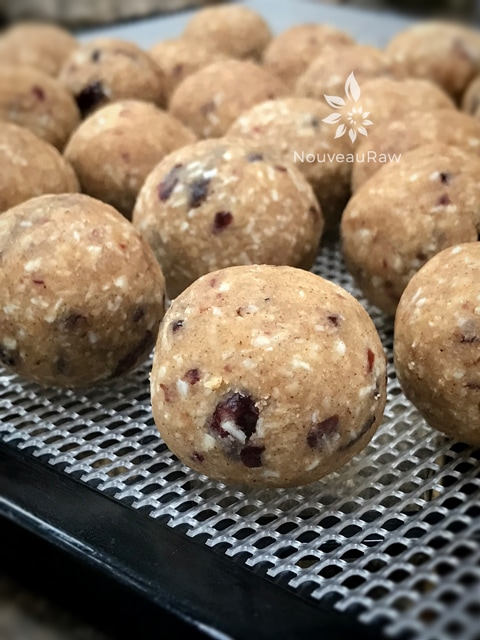
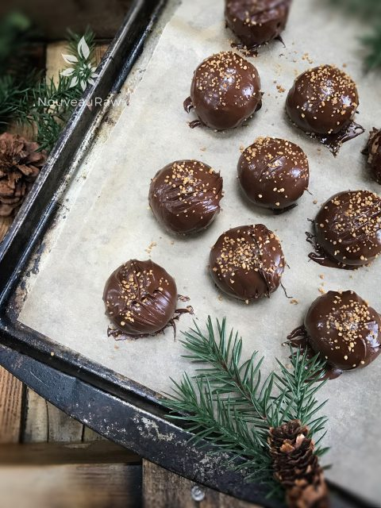
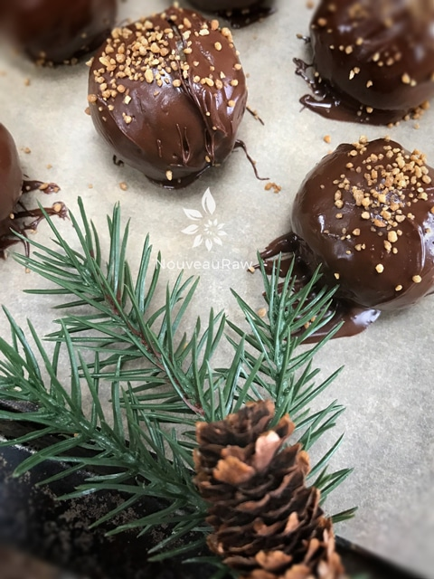
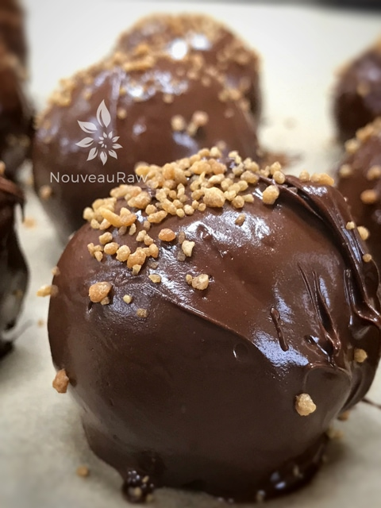

Cranberry Pumpkin Spiced Meltaways
~ raw, vegan, gluten-free ~
Looking for a quick, easy, delicious, nutritious treat to whip up for the Fall season celebration? Look no further… these Cranberry Pumpkin Spiced Meltaways will not let you down.
I like to make these up ahead of time and keep them stored in the freezer. That way when expected or unexpected guests show up… I have a wonderful treat to serve to our guests. You also have the option of dehydrating them or not. I usually don’t because I like the moistness.
One meltaway will provide 3-4 dainty bites and 2 manly bites. The perfect size to satisfy the sweet tooth without leaving you feeling guilty or sugared-out.
The key to creating a meltaway texture is all in the flour texture. I didn’t just toss whole almonds into the food processor. Instead, I used a fine ground almond flour that is made from almond pulp. I will provide a link down below on how to make that if you are uncertain.
If you are pressed for time or do not eat 100% raw, you can use store-bought flour. Do the best you can, where you are in this journey of healthier eating.
Coating these sweet treats in chocolate is an option, they have a wonderful, slightly sweet flavor without. In the past when I have shared these with others, most people have voted for the chocolate covered ones. For a little decor, I sprinkled raw coconut crystals on top. I hope you have fun with this treat and make sure to share them with loved ones. I would love to hear what you think down below in the comment section. Blessings, amie sue
Yields 30 (1 Tbsp) cookies
Dry Ingredients:
Wet Ingredients:
- 1/4 cup (40 g) melted coconut oil
- 6 Tbsp (100 g) maple syrup
- 1/4 cup (40 g) fresh orange juice
- 1 Tbsp (7 g) vanilla extract
Optional ~ Decorating with Chocolate Ingredients:
Preparation:
- In the food processor fitted with the “S” blade, combine the: almond flour, shredded coconut, coconut flour, cinnamon, pumpkin spice, and salt. Pulse together making sure all the spices get mixed in well.
- If you don’t have pumpkin spice, you can make your own by mixing the following ingredients in a jar: Yields 1 tsp: 1/2 tsp cinnamon, 1/4 tsp ground ginger, 1/8 tsp ground allspice or ground cloves, and 1/8 tsp ground nutmeg.
- If at all possible, use fine almond flour for the best mouth texture. They are called Meltaways for a reason. :)
- Add the coconut oil, maple syrup, orange juice, vanilla, and cranberries. Process until the batter starts to roll into a ball while spinning.
- To shape the cookies, I used my 2 tsp cookie scoop.
- Place the dough in the palm of your hand and with them cupped, roll the dough into a ball shape. If you roll it with flat hands you will egg up with an egg shape.
- Place the balls on the mesh sheet that comes with the dehydrator.
Dehydrating (optional):
- Dehydrate at 145 degrees (F) for 1 hour.
- This step is to only create a firmer outside and to warm them for eating (if desired, not required).
- If you don’t have a dehydrator, place cookies in an oven set to the “warm” setting, with the oven door cracked open, for about an hour.
- You are looking for your cookies to be dry on the outside, but still moist on the inside.
- Once cookies have cooled, place them in the fridge to chill and set before serving.
- Place cookies in the refrigerator for an hour to chill and set before serving. This will result in a soft, moist cookie, almost more like a cookie dough ball.
- Cookies with last, well-wrapped, in the refrigerator for up to 4 days. Or they can be stored in the freezer to extend that.
Culinary Explanations:
- Why do I start the dehydrator at 145 degrees (F)? Click (here) to learn the reason behind this.
- When working with fresh ingredients it is important to taste test as you build a recipe. Learn why (here).
- Don’t own a dehydrator? Learn how to use your oven (here). I do however truly believe that it is a worthwhile investment. Click (here) to learn what I use.
-

-
You can enjoy them as is… or take them to a whole new level by coating them in chocolate.
-

-
Once dipped in chocolate, sprinkle raw coconut crystals on top.
-

-
Enjoy bite after bite…
-

-
Delish, nutritious, and easy to make.
© AmieSue.com